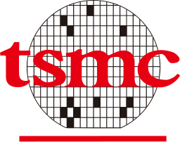

R&D Engineer
Delta Electronics · Delta Research Center (台達研究院)
Hsinchu office · Taiwan · 研發替代役
Sep 2026 – Present
COMPUTER VISION & Generative AI & VLM
Building with vision.
Exploring what AI can do.
I work at Delta Electronics’ Delta Research Center (台達研究院) in Hsinchu, Taiwan, where I have been working as an R&D Engineer since September 2026. My focus areas are computer vision, generative AI, and vision-language models (VLMs).
My background is in Data Science and Geomatics at National Cheng Kung University. My work spans image restoration, remote sensing, and vision-language learning, with a focus on developing and evaluating deep learning methods. I’m interested in opportunities to bring these skills to applied AI and engineering teams.
CHING-HENG CHENG
TAIWAN
Delta Electronics · Delta Research Center (台達研究院)
Hsinchu office · Taiwan · 研發替代役
Sep 2026 – Present
Taiwan Semiconductor Manufacturing Company, Ltd.
Hsinchu office · Taiwan
Jul – Aug 2025

National Cheng Kung University
Advisor: Assoc. Prof. Chih-Chung Hsu · Tainan, Taiwan
2024 – 2026
National Cheng Kung University
Tainan, Taiwan
2020 – 2024
Image restoration, remote sensing, and visual understanding. * Equal contribution.
arXiv preprint · 2026
Interactive single-image refocusing with one-time diffusion restoration and a lightweight, defocus-aware renderer. Adjust the focal plane and blur strength while preserving in-focus content.
WACV · 2026
Underwater image enhancement with an efficient network combining wavelet processing and white balance.
IEEE TGRS · 2026
Universal hyperspectral image restoration through vision-language modulated frequency adaptation.
URL: https://ieeexplore.ieee.org/abstract/document/11371358/
ISPRS Annals · 2026
Building change detection in optical remote sensing imagery using DINOv3.
URL: https://isprs-annals.copernicus.org/articles/XI-3-2026/523/2026/
ICCT-Pacific · 2025
A multi-stage deep learning pipeline for detecting and segmenting cracks in high-speed rail brake discs.
ICPR Workshop · 2024
Self-supervised crop disease detection using hyperspectral imagery and feature mining.
碩士論文獎優等
IET Taipei · 國際工程與科技學會中華民國分會
First Place
Automated Crop Disease Diagnosis from Hyperspectral Imagery 3rd Challenge · ICPR
Fourth Place
MarineVision Restoration Challenge · WACV MaCVi
佳作
AI CUP
Fifth Place
Corn Yield Prediction Using Satellite Data · MLCAS
Second Place
3S 創客競賽中華民國航空測量及遙感探測學會
GET IN TOUCH
Interested in working together? I’m open to conversations about
AI engineering roles, career opportunities, and collaboration.